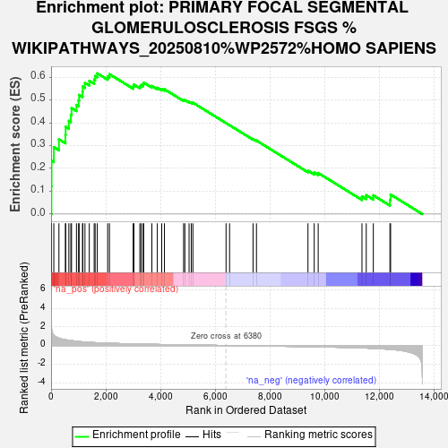
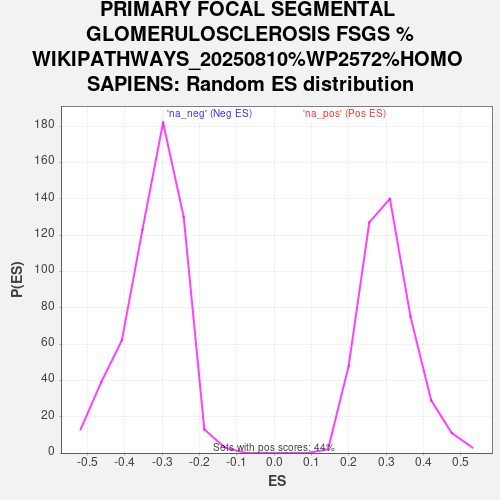

| Dataset | ControlvsDiabete |
| Phenotype | NoPhenotypeAvailable |
| Upregulated in class | na_pos |
| GeneSet | PRIMARY FOCAL SEGMENTAL GLOMERULOSCLEROSIS FSGS %WIKIPATHWAYS_20250810%WP2572%HOMO SAPIENS |
| Enrichment Score (ES) | 0.6167548 |
| Normalized Enrichment Score (NES) | 2.031845 |
| Nominal p-value | 0.0 |
| FDR q-value | 0.0458826 |
| FWER p-Value | 0.356 |

| SYMBOL | RANK IN GENE LIST | RANK METRIC SCORE | RUNNING ES | CORE ENRICHMENT | |
|---|---|---|---|---|---|
| 1 | COL4A3 | 12 | 2.058 | 0.1227 | Yes |
| 2 | COL4A4 | 17 | 1.858 | 0.2339 | Yes |
| 3 | CLDN1 | 100 | 1.092 | 0.2934 | Yes |
| 4 | MKI67 | 287 | 0.797 | 0.3275 | Yes |
| 5 | COL4A5 | 524 | 0.616 | 0.3470 | Yes |
| 6 | AGRN | 533 | 0.611 | 0.3831 | Yes |
| 7 | ITGB4 | 649 | 0.561 | 0.4083 | Yes |
| 8 | SYNPO | 722 | 0.533 | 0.4350 | Yes |
| 9 | FAT1 | 747 | 0.523 | 0.4646 | Yes |
| 10 | CDKN1A | 927 | 0.450 | 0.4784 | Yes |
| 11 | PTPRO | 1004 | 0.426 | 0.4983 | Yes |
| 12 | ACTN4 | 1024 | 0.419 | 0.5220 | Yes |
| 13 | PCNA | 1150 | 0.388 | 0.5361 | Yes |
| 14 | INF2 | 1156 | 0.388 | 0.5590 | Yes |
| 15 | ITGAV | 1237 | 0.371 | 0.5754 | Yes |
| 16 | CD80 | 1395 | 0.336 | 0.5839 | Yes |
| 17 | DAG1 | 1573 | 0.308 | 0.5893 | Yes |
| 18 | MYO1E | 1609 | 0.303 | 0.6049 | Yes |
| 19 | LAMB2 | 1687 | 0.292 | 0.6168 | Yes |
| 20 | PLCE1 | 2066 | 0.248 | 0.6036 | No |
| 21 | SCARB2 | 2132 | 0.241 | 0.6133 | No |
| 22 | FYN | 2997 | 0.168 | 0.5594 | No |
| 23 | TGFB1 | 3023 | 0.166 | 0.5675 | No |
| 24 | YWHAQ | 3241 | 0.151 | 0.5605 | No |
| 25 | CD151 | 3290 | 0.147 | 0.5658 | No |
| 26 | TLN1 | 3361 | 0.142 | 0.5692 | No |
| 27 | LRP6 | 3379 | 0.142 | 0.5764 | No |
| 28 | ITGB1 | 3680 | 0.125 | 0.5617 | No |
| 29 | PARVA | 3879 | 0.114 | 0.5539 | No |
| 30 | LRP5 | 4040 | 0.105 | 0.5483 | No |
| 31 | NOTCH1 | 4139 | 0.100 | 0.5471 | No |
| 32 | NCK1 | 4838 | 0.066 | 0.4994 | No |
| 33 | MYH9 | 4884 | 0.064 | 0.4999 | No |
| 34 | SMARCAL1 | 5038 | 0.057 | 0.4920 | No |
| 35 | CTNNB1 | 5118 | 0.055 | 0.4894 | No |
| 36 | LIMS1 | 5177 | 0.052 | 0.4882 | No |
| 37 | TLR4 | 6388 | -0.000 | 0.3987 | No |
| 38 | MME | 6517 | -0.005 | 0.3895 | No |
| 39 | PLAUR | 7374 | -0.041 | 0.3285 | No |
| 40 | PLCG1 | 7499 | -0.046 | 0.3221 | No |
| 41 | CTSL | 9379 | -0.126 | 0.1905 | No |
| 42 | CDKN1C | 9607 | -0.139 | 0.1820 | No |
| 43 | CD2AP | 9752 | -0.146 | 0.1801 | No |
| 44 | LAMA5 | 11350 | -0.261 | 0.0776 | No |
| 45 | TRPC6 | 11507 | -0.277 | 0.0826 | No |
| 46 | CDKN1B | 11765 | -0.307 | 0.0820 | No |
| 47 | ITGB3 | 12371 | -0.415 | 0.0622 | No |
| 48 | CR1 | 12396 | -0.420 | 0.0856 | No |
